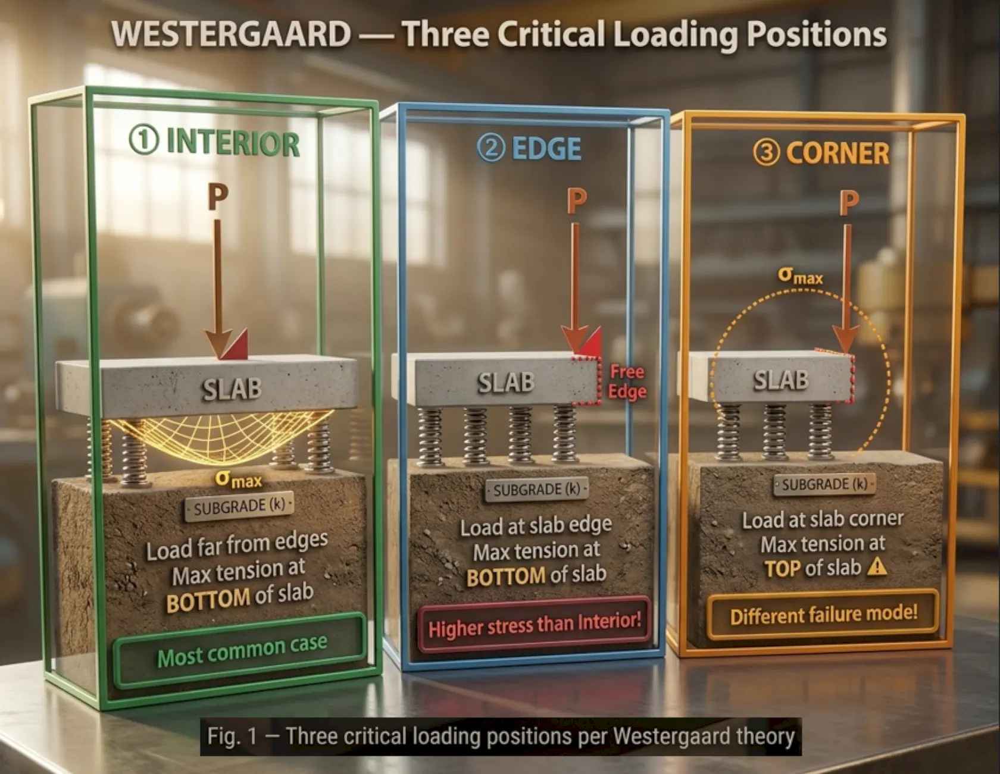
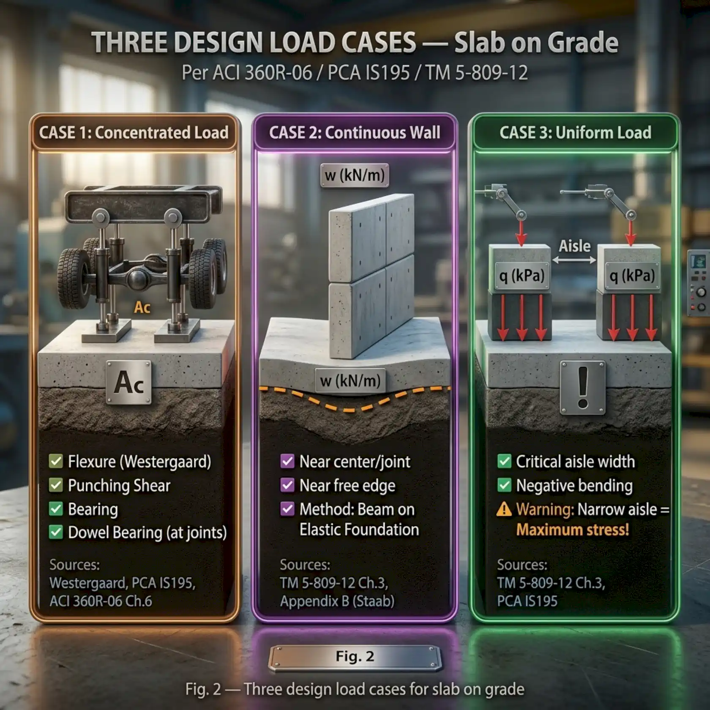
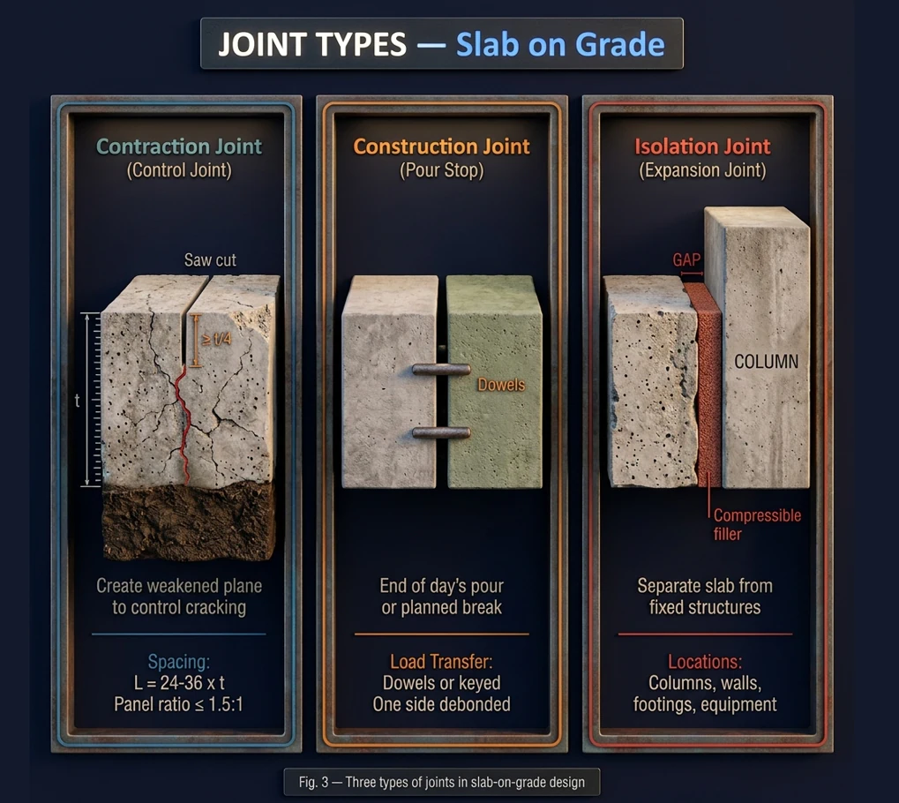
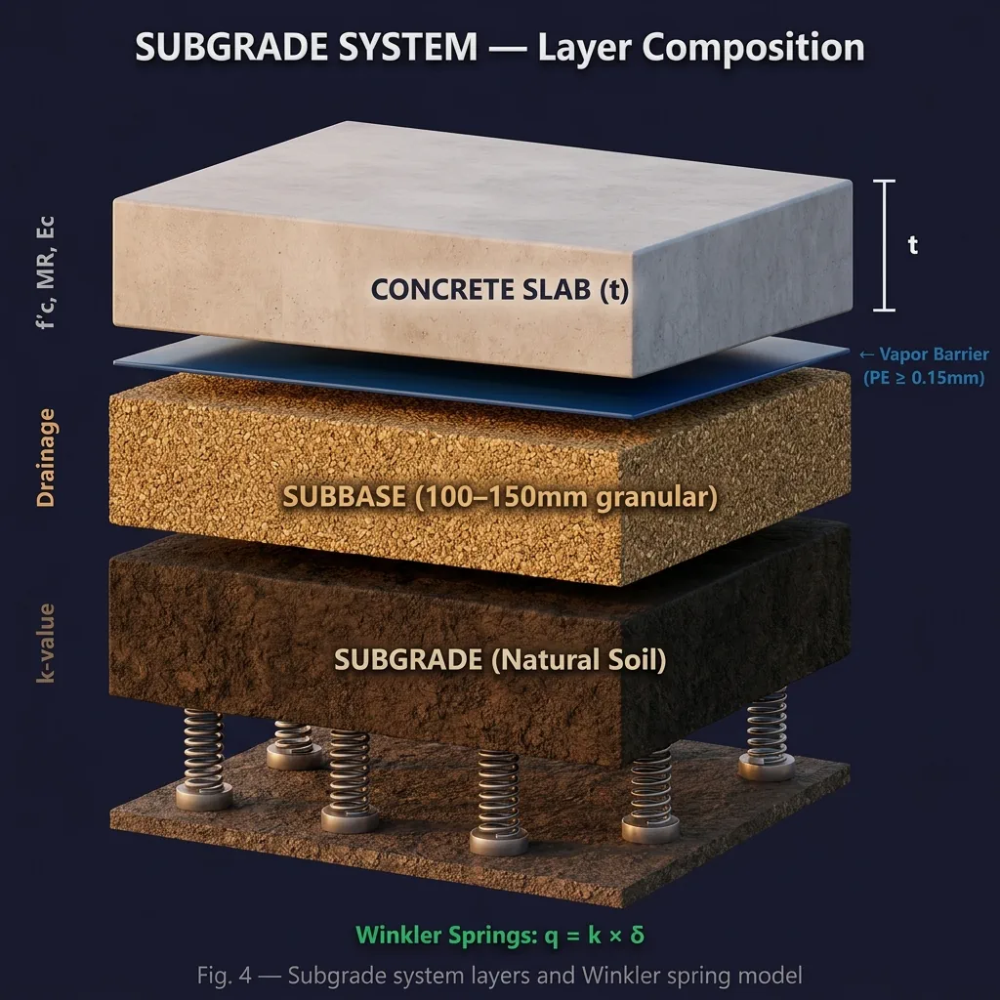

1. What is a concrete slab on grade?
- A concrete slab placed directly on the ground (subgrade / subbase).
- Not a structural element of the building — it is non-structural per ACI 360.
- Its purpose is to provide a flat surface carrying operational loads such as forklifts, racks and partition walls.
- Design focuses on serviceability: crack control, curling and flatness.
2. The Winkler subgrade model
- The subgrade is modelled as a system of independent springs (dense liquid foundation).
- Each point reacts linearly with settlement: q = k × δ.
- The model is simple yet accurate enough for practical design.
Modulus of subgrade reaction, k
k is the pressure required to cause one unit of deformation, in pci (lb/in³) or MN/m³. It is measured by a field plate load test (Ø750 mm plate) or estimated from a CBR correlation. Remember that k is not a constant — it depends on soil type, moisture content and plate size.
| Soil type (USCS) | k (pci) | k (MN/m³) | Notes |
|---|---|---|---|
| Organic soils (OL, OH, Pt) | 25–100 | 7–27 | Very weak, improvement needed |
| High-plasticity clays/silts (CH, MH) | 50–150 | 14–41 | Moisture-sensitive, k varies widely |
| Low-plasticity clays/silts (CL, ML) | 50–200 | 14–54 | Most common |
| Silty/clayey sands (SM, SC) | 50–250 | 14–68 | — |
| Sands (SW, SP) | 150–400 | 41–109 | Good |
| Silty/clayey gravels (GC, GM) | 200–500 | 54–136 | — |
| Gravels (GW, GP) | 300–500 | 82–136 | Very good |
3. Radius of relative stiffness — the key parameter
Lr = ⁴√[ E·t³ / ( 12·k·(1 − μ²) ) ]| Symbol | Meaning | Unit |
|---|---|---|
| Lr | Radius of relative stiffness | mm (in) |
| E | Concrete modulus of elasticity | MPa (psi) |
| t | Slab thickness | mm (in) |
| k | Modulus of subgrade reaction | MN/m³ (pci) |
| μ | Poisson's ratio (≈ 0.15–0.20) | — |
Lr represents the zone of influence of a load on the slab. A large Lr means the slab is stiff relative to the subgrade, the load spreads further and stresses are lower. A small Lr means the slab is flexible relative to the subgrade, the load concentrates and stresses are higher.
4. Westergaard theory — three loading positions

Interior loading
- The load sits far from any edge or corner.
- Maximum tensile stress is at the bottom of the slab, directly under the load.
- This is the most common case in industrial buildings — forklifts and rack posts.
fb = [ 3P(1+μ) / (2π·t²) ] × [ ln(2Lr/b) + 0.5 − γ ]
P = concentrated load γ ≈ 0.5772 (Euler's constant)
b = equivalent radius of the resisting section
when a < 1.724t : b = √(1.6a² + t²) − 0.675t
when a ≥ 1.724t : b = aEdge and corner loading
- Edge loading: on the slab edge but away from corners. Tensile stress is higher than interior loading because support is lost on one side — check it separately.
- Corner loading: the maximum tensile stress is at the top of the slab — the opposite of the other two cases.
Corner: fc = [ 3P / t² ] × [ 1 − (a√2 / Lr)^0.6 ]5. Slab thickness design — the PCA / ACI 360 method
This is an allowable stress approach: compute the applied stress and compare it with the allowable stress, which is the modulus of rupture divided by a factor of safety.
MR = 9 × √f'c (f'c in psi)
MR = 0.75 × √f'c (f'c in MPa)
Allowable stress WS = MR / FoS| Loading condition | Recommended FoS |
|---|---|
| Non-repetitive, light traffic | 1.7 |
| Moderate repetition | 1.7–2.0 |
| Heavy loads, dense traffic | 2.0 |
| Special or critical loads | > 2.0 |

Case 1 — concentrated or wheel load
- Sources: rack posts, forklift wheels, equipment legs.
- Checks: Westergaard flexure, punching shear, bearing, and dowel bearing if near a joint.
- Inputs: P, contact area Ac, f'c, t, k and FoS — where Ac = P / p, with p the tyre or post pressure.
Case 2 — continuous wall load
The load comes from masonry or partition walls built on the slab. It is analysed as a beam on elastic foundation per TM 5-809-12, checked at two positions: near the centre (or a joint) and near a free edge.
Case 3 — uniform load
The load comes from stacked goods or stored materials. The critical condition is the aisle width between loaded areas: the maximum stress occurs when the aisle is narrow, where the slab bends in the opposite direction.
Punching shear and finding the minimum thickness
fv = P / (b₀ × t)
b₀ = perimeter of the critical section, taken at d/2 from the load edge
Allowable stress Fv = 4√f'c (psi) or 0.33√f'c (MPa)- Assume a trial thickness t.
- Compute Lr, fb and fv for each load case.
- Check fb ≤ MR/FoS and fv ≤ the allowable Fv.
- If a check fails, increase t and repeat; t_min is the smallest thickness at which every check passes.
6. Joint design

| Joint type | Purpose | Location |
|---|---|---|
| Contraction joint | Creates a weakened plane to control cracking | Saw cut 1/4–1/3 of the slab depth |
| Construction joint | Boundary of a day's concrete pour | End of the pour or a planned break |
| Isolation joint | Separates the slab from fixed structures | Around columns, walls and equipment bases |
Joint spacing
- Rule of thumb: L = (24 to 36) × slab thickness. A 150 mm slab gives L = 3.6–5.4 m; a 200 mm slab gives L = 4.8–7.2 m.
- Prefer square panels; if rectangular, keep the length-to-width ratio below 1.5.
- Align joints with the column grid where possible.
Dowel bars
- Purpose: transfer vertical load across the joint and prevent faulting between panels.
- Use a smooth round bar; one half must be debonded so the joint can open and close.
- The diameter is typically ≈ t/8 (about 20–25 mm for a 150–200 mm slab).
- Length 400–500 mm with 200–250 mm projecting each side; spacing 300 mm.
Dowel bearing stress: fb,dowel = P_dowel / (d × t_eff)
Allowable (Friberg/PCA): Fb,allow = (4/3 − d/3t) × f'c7. Reinforcement and crack control
Reinforcement becomes necessary when joint spacing is large, when crack width must be controlled, or when the temperature differential is significant.
Shrinkage and temperature reinforcement
As = ( f × L × W × t × γ ) / ( 2 × fs )| Symbol | Meaning |
|---|---|
| f | Slab-to-subgrade friction coefficient (1.0–2.5, typically ≈ 1.5) |
| L | Distance between joints |
| W | Concrete unit weight (≈ 2400 kg/m³) |
| t | Slab thickness |
| γ | Factor, equal to 1 for a single layer at mid-depth |
| fs | Allowable steel stress (typically 0.67fy) |
- Crack-control reinforcement is placed in the upper third of the slab depth.
- Do not run deformed bars through a contraction joint — it stops the joint working and moves the crack elsewhere.
- Crack width is estimated as w = ε × L_joint / 2, where ε combines drying shrinkage and thermal contraction.
8. Subgrade preparation and curling

- Subgrade: must be compacted and uniform; remove weak and organic soils.
- Subbase: 100–150 mm of sand or crushed stone to spread load, drain water and provide a working platform.
- Vapour barrier: a PE film ≥ 0.15 mm beneath the slab to stop moisture rising from the ground.
- Slip membrane: reduces slab-to-subgrade friction and therefore shrinkage stress.
Curling and how to reduce it
Slab edges curl upward because of moisture and temperature gradients between top and bottom: the top dries and shrinks faster while the underside stays damp. The slab then loses contact with the subgrade at edges and corners, load concentrates there and cracking follows.
- Reduce the water–cement ratio to reduce shrinkage.
- Use the largest practical aggregate size to reduce water demand.
- Cure properly for at least seven days to reduce the moisture gradient.
- Keep joint spacing sensible so panels stay small.
- Provide top reinforcement to control curling cracks.
9. Quick reference tables
Concrete properties
| Property | Formula | Example, f'c = 35 MPa |
|---|---|---|
| Modulus of rupture (MR) | 0.75√f'c (MPa) | 4.44 MPa |
| Elastic modulus (Ec) | 4700√f'c (MPa) | 27,800 MPa |
| Poisson's ratio (μ) | 0.15–0.20 | 0.15 |
Factor of safety and working stress
| Scenario | FoS | WS = MR/FoS |
|---|---|---|
| Light racking, few forklifts | 1.7 | 2.61 MPa |
| Standard warehouse | 1.8 | 2.47 MPa |
| Heavy warehouse, continuous forklift traffic | 2.0 | 2.22 MPa |
Typical slab thickness
| Application | Thickness (mm) | Thickness (in) |
|---|---|---|
| Residential, light use | 100–125 | 4–5 |
| Commercial, office | 125–150 | 5–6 |
| Light industrial | 150–175 | 6–7 |
| Heavy industrial | 175–250 | 7–10 |
| Warehouse, heavy forklifts | 200–300 | 8–12 |
10. Design checklist from A to Z
Survey and input data
- Geotechnical report available: soil type, k-value, groundwater level?
- Operational loads defined: forklifts (P, Ac), rack posts, walls?
- Flatness requirements (FF/FL) specified?
- Environmental conditions considered: temperature differential, moisture?
Design phase
- f'c selected and MR, Ec calculated?
- k-value determined by test or lookup table?
- Radius of relative stiffness Lr calculated?
- Flexure checked for all three load cases?
- Punching shear and bearing checked?
- Minimum thickness t_min determined?
- Joints designed: location, spacing, type?
- Dowel bars designed where needed?
- Shrinkage/temperature reinforcement calculated and crack width checked?
Construction phase
- Subgrade compacted and uniform?
- Subbase placed to the correct thickness?
- Vapour barrier installed?
- Reinforcement or mesh placed correctly in the upper third?
- Dowels placed correctly and debonded on one side?
- Concrete placed at the correct slump and grade?
- Contraction joints cut at the right time (4–12 hours after placement)?
- Cured for at least seven days?
11. Related standards
| Standard | Scope | What engineers need to know |
|---|---|---|
| ACI 360R | Slab on grade design | The primary reference — methods, formulas and detailing |
| ACI 318 | Structural concrete design | Applies only when the slab is a structural element |
| ACI 302.1R | Concrete floor construction | Construction, curing and flatness requirements |
| PCA IS195 | Industrial floor thickness design | PCA design charts and tables |
| TM 5-809-12 | Heavy-load concrete floor slabs | Wall load, uniform load and lookup tables |
| Westergaard (1926) | Elastic plate on elastic foundation | The original equations for interior, edge and corner loading |
Supporting design tools
Closing — ten things to remember
| Content | Keyword |
|---|---|
| The subgrade is a Winkler spring system, q = k × δ | Winkler k |
| Lr is the key parameter behind every formula | Lr |
| Three loading positions: interior, edge, corner | 3 Positions |
| Interior loading usually governs | Interior Governs |
| Working stress is MR divided by a factor of 1.7–2.0 | Working Stress |
| MR = 9√f'c (psi) or 0.75√f'c (MPa) | MR |
| Joints at 24–36 times the thickness, square panels | Joint Spacing |
| Dowels must be round, smooth and debonded on one side | Dowel Bar |
| Reinforcement does not prevent cracks, it only keeps them tight | Crack Control |
| A uniform subgrade makes a good slab — investing there always pays | Subgrade First |
Part of the series "Structural design for industrial facilities" — Roberto Structural. The content is technical guidance; the engineer remains responsible for checking and adapting it to the conditions of each project and the requirements of the governing code.